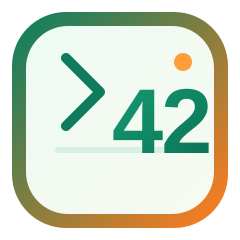

Overall Result
Core Suite
Business logic tests using synthetic assessment data.
Dependency Suite
Simulated external dependencies (OpenAI adapter and dictation adapter).

Standalone synthetic-data test page for core and dependency suites.
Business logic tests using synthetic assessment data.
Simulated external dependencies (OpenAI adapter and dictation adapter).